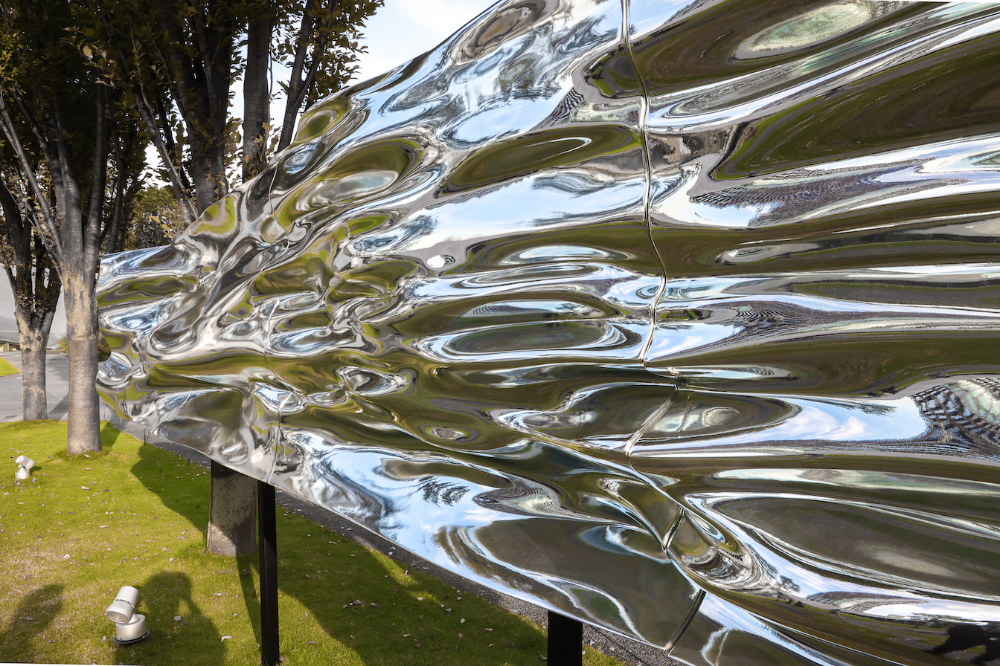

Moment
A sculpture with a time theme. We measured the wind at the venue of DESIGN TOUCH 2019. The measured data which cannot be captured by the human eye was visualized and expressed as a sculpture.
" When the concept of 'moment', which is usually elusive, appears in front of us as a physical object, the viewer will reconsider the meaning of 'time' ".(Translated from TOKYO MIDTOWN DESIGN TOUCH 2019, Moment | DESIGN TOUCH 2019 ).
-
- sculpture


Credits
Artist : Akira Wakita
Concept : Akira Wakita / Nami Fujitani
Planner : Yosuke Nakazato (HAKUTEN)
Designer : Ryukei Aoyagi (HAKUTEN)
Production Management : Otake Konatsu (HAKUTEN) / Masayuki Sawada (HAKUTEN)
Research : Ken Rio Ishii / Koichi Nakamura
Producer Text : Nami Fujitani
Organized by : TOKYO MIDTOWN
Exhibition : Tokyo Midtown DESIGN TOUCH 2019
Links
Production Collaboration : HAKUTEN